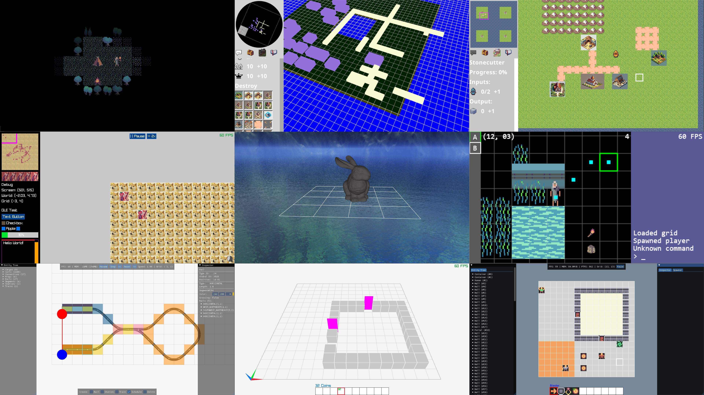
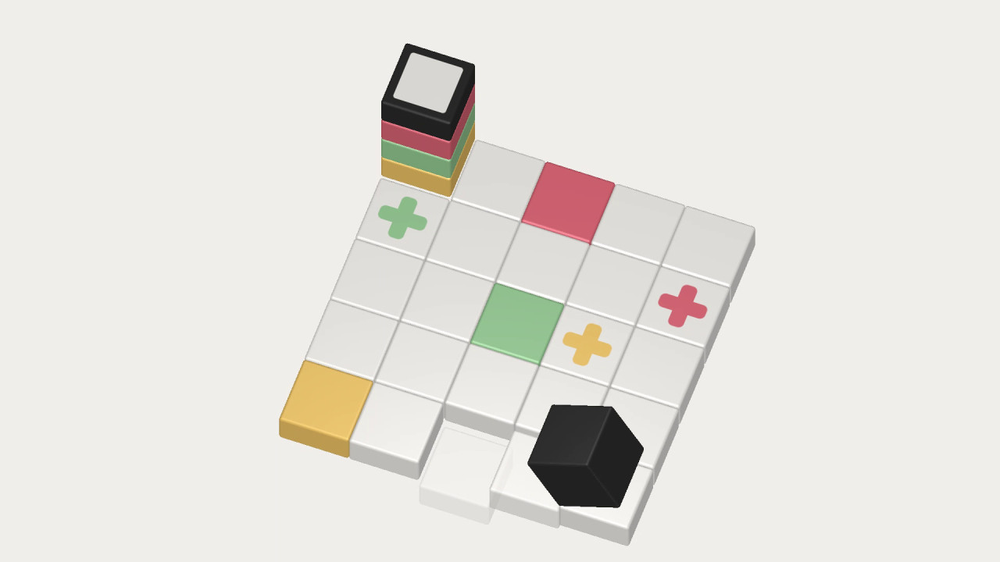

Projects
This is an overview of some noteworthy personal projects that I am working on or have finished.
Seaside is intended to be a modern, lightweight and fast IDE for the C programming language, centered around the Clang/LLVM toolchain. Over the years, I have become increasingly frustrated with the state of modern software development tools. I have witnessed how the development environments that I was using on a regular basis have become slower and buggier with every update. My hope is that I can do my share in fixing this problem by creating a properly integrated development environment for C that gets out of the way and is a joy to use.

Between 2021 and 2025, I developed a number of technical prototypes for various video game ideas I came up with. Most of these didn’t reach the stage of actually being playable as games, instead they should be seen as experiments in using different languages, frameworks and architectures for video game programming. In 2025, I realized that I have grown out of gaming for the most part, and that I’m not all that drawn to the game design aspect of creating video games. I do however still enjoy the technical aspects of it and hope to be able to engage with them through other means. Among the created prototypes are a small traditional roguelike (this one is actually playable!), a real-time strategy city builder, and a transport simulation game. All prototypes are available on Github.

Cubicolor is a minimalist 3D puzzle game which I developed and self-published on Steam in 2016. The game was initially written in Java with the libGDX game development framework. Over the course of the following two years I fixed bugs, added requested features, and ended up re-implementing the game in the Godot engine. The code can be found on Github.